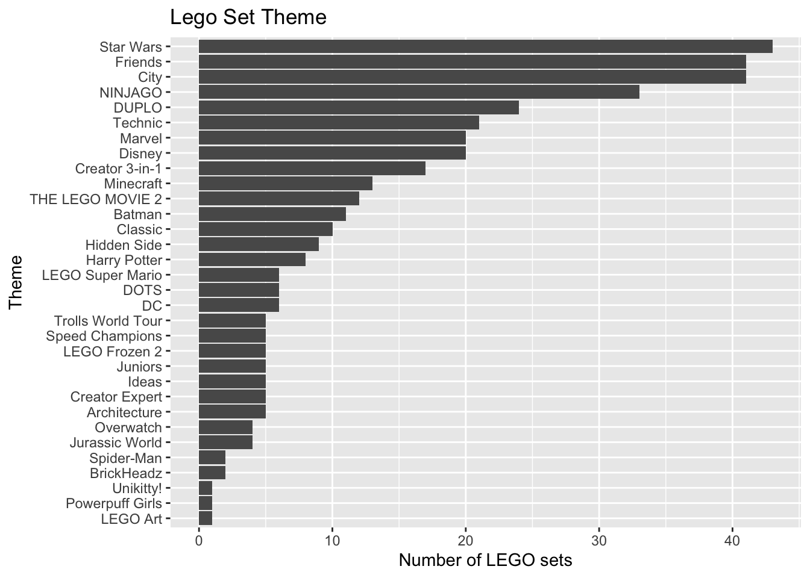

library(tidyverse)
library(tidymodels)
library(patchwork)
library(rms)
library(knitr)AE 12: Multiple linear regression review
LEGO Sets
Important
Go to the course GitHub organization and locate your ae-12- to get started.
The AE is due on GitHub by Thursday, November 03, 11:59pm.
The data for this analysis includes information about LEGO sets from themes produced January 1, 2018 and September 11, 2020. The data were originally scraped from Brickset.com, an online LEGO set guide.
You will work with data on about 400 randomly selected LEGO sets produced during this time period. The primary variables are interest in this analysis are
Pieces: Number of pieces in the set from brickset.com.Amazon_Price: Amazon price of the set scraped from brickset.com (in U.S. dollars)Size: General size of the interlocking bricks (Large = LEGO Duplo sets - which include large brick pieces safe for children ages 1 to 5, Small = LEGO sets which- include the traditional smaller brick pieces created for age groups 5 and - older, e.g., City, Friends)Theme: Theme of the LEGO set
The goal of this analysis is to predict the Amazon price based on the number of pieces, theme, and size of pieces. We will only include observations that have recorded values for all relevant variables.
legos <- read_csv("data/lego-sample.csv") |>
select(Size, Pieces, Theme, Amazon_Price) |>
drop_na()- What is a disadvantage of dropping observations that have missing values, instead of using a method to impute, i.e., fill in, the missing data? How might dropping these observations impact the generalizability of conclusions?
Exploratory data analysis
Response variable
ggplot(data = legos, aes(x = Amazon_Price)) +
geom_histogram() +
labs(title = "Price of Lego sets on Amazon",
x = "Price in US dollars")
Predictor variables
p_pieces <- ggplot(data = legos, aes(x = Pieces)) +
geom_histogram() +
labs(title = "Number of pieces",
x = "")
p_size <- ggplot(data = legos, aes(x = Size)) +
geom_bar() +
labs(title = "Piece size",
x = "") +
coord_flip()
p_pieces / p_size
- What (if any) feature engineering might we want to include in a recipe for a model for
PiecesandSize?
legos |>
count(Theme) |>
ggplot(aes(x = fct_reorder(Theme, n), y = n)) +
geom_col() +
labs(title = "Lego Set Theme",
x = "Theme",
y = "Number of LEGO sets") +
coord_flip()
Why should we avoid putting
Themein a model as is?How can we use
step_other()in the recipe to makeThememore usable in the model?
Model Fitting
Training and test sets
Write code to data into training (75%) and testing (25%) sets.
set.seed(1031)
# add code to make training and test setsModel workflow
Fit the model using Pieces, Size, and Theme to understand variability in Amazon_Price. To do so, specify the model and use training data to create a recipe applying the feature engineering steps mentioned above. Then, build the model workflow and fit the model.
# add code to specify model # add code to create recipe# This is an optional step to see the outcome of the recipe
# add code to prep and bake # add code to build workflow# add code to fit modelCheck conditions + multicollinearity
When we fit a model using recipe and workflow, we need to extract the model object before using the augment function. Fill in the name of the model fit in the code below.
lego_fit_model <- extract_fit_parsnip(______)
lego_aug <- augment(lego_fit_model)Residuals vs predicted values
Use the code below to make a plot of residuals vs. predicted values
ggplot(data = lego_aug, aes(x = .fitted, y= .resid)) +
geom_point() +
geom_hline(yintercept = 0, color = "red", linetype = "dashed") +
labs(x = "Predicted",
y = "Residuals",
title = "Residuals vs. Predicted")Distribution of residuals
Fill in the code below to make a histogram of the residuals with an overlay of the normal distribution.
ggplot(lego_aug, aes(.resid)) +
geom_histogram(aes(y = after_stat(density))) +
stat_function(
fun = dnorm,
args = list(mean = mean(lego_aug$_____), sd = sd(_____)),
color = "red"
)Use the plots and information about the data to comment on whether each condition is satisfied.
Linearity: [Add response]
Constant variance: [Add response]
Normality: [Add response]
Independence: [Add response]
Multicollinearity
Fun the code to use the vif() function from the rms package to check multicollinearity.
vif(lego_fit_model$fit)- Are there issues with multicollinearity in the model?
Next steps
- Based on the assessment of the model conditions and multicollinearity, what is the next step you might take in the model building process?
Important
To submit the AE:
- Render the document to produce the PDF with all of your work from today’s class.
- Push all your work to your
ae-12-repo on GitHub. (You do not submit AEs on Gradescope).